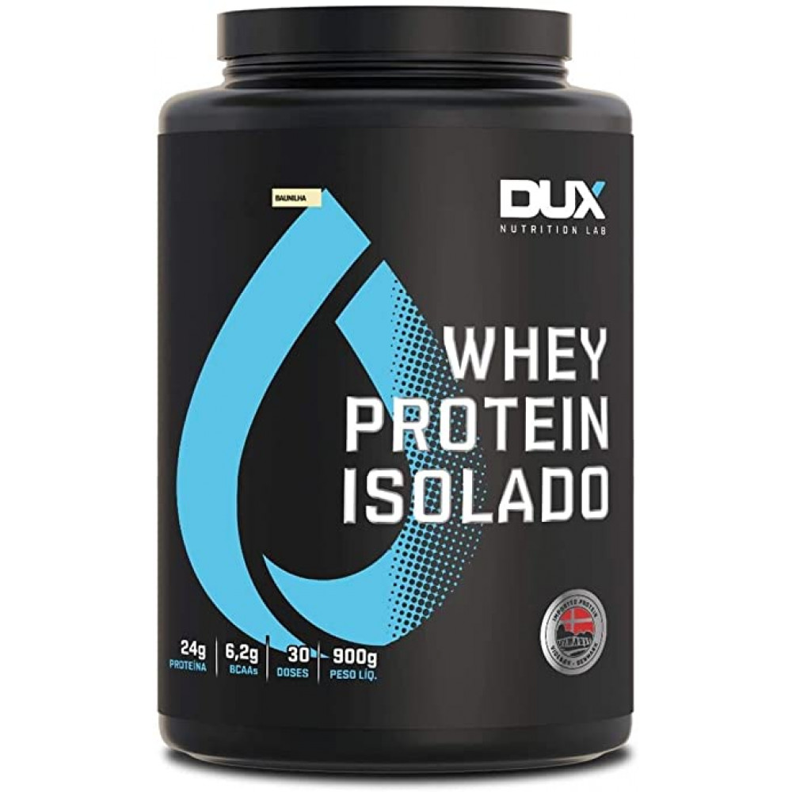
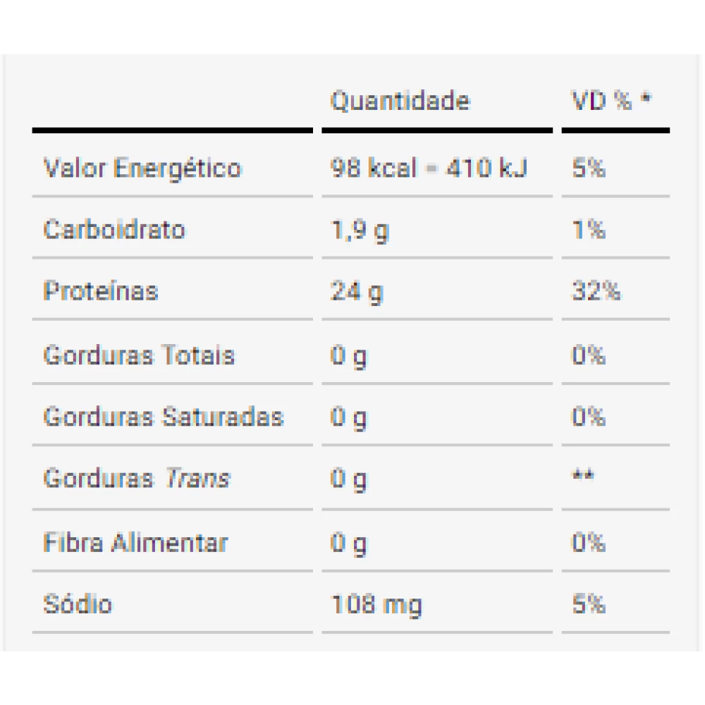

- 
- 
Whey Protein Isolado Dux Nutrition Lab
R$95,99
Whey Protein Isolado Dux Nutrition Lab é composto unicamente de proteina isolada do soro do leite, sendo a proteína de altíssimo valor biológico. Cada porção equivale a incríveis 24G de puríssima proteína, com zero teor de carboidratos, lactose ou qualquer tipo de gordura (fat free).
A Proteína é o nutriente mais importante na construção do músculo e não há como obter resultados satisfatórios sem sua ingestão apropriada. Os ganhos musculares são, sem sombra de dúvida, muito maiores em relação as proteínas comuns.